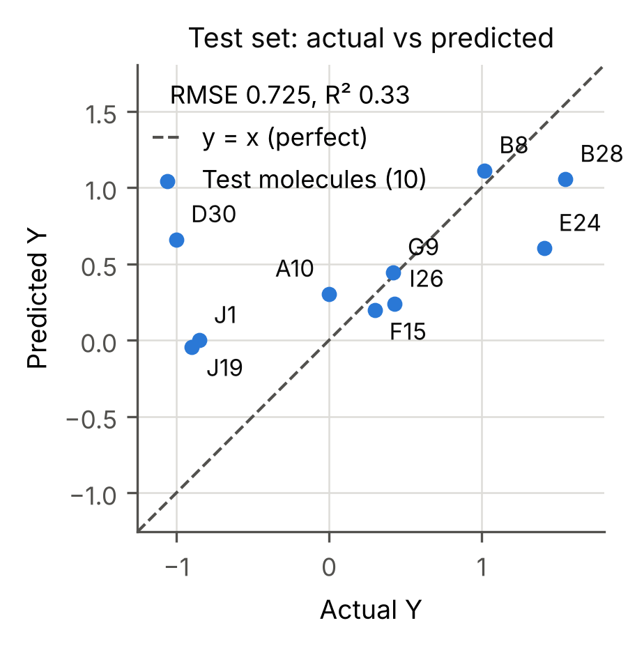

Name: Andreas Evagorou AM: 1134609
The Selwood data set has 31 molecules, each described by 53 numerical descriptors (charges, surface areas, moments, log P, ...) and a biological activity Y between −1 and 1.84. The task is regression: predict Y from the 53 features, training on 21 molecules and testing on the other 10.
An RBF network has one hidden layer of Gaussian neurons. Each hidden neuron h has a centre Rh in the input space and a width σh, and responds strongly only to inputs near its centre; the output is a weighted sum of these responses plus a bias. The MLP of Assignment 1 instead uses sigmoid neurons, each of which splits the whole input space with a hyperplane, so every neuron reacts to every input. RBF neurons are therefore local: the hidden layer measures how similar a molecule is to a few prototypes, the centres can be placed by clustering before training, and the output is linear in the hidden responses.
The problem is hard because there are far fewer patterns than dimensions: 21 points in a 53-D space. Any two molecules are far apart, and even 3 centres already give 3×53 + 3 + 3 + 1 = 166 trainable numbers for 21 targets, so overfitting is the main danger, and with only 10 test molecules a single badly predicted molecule changes the test error a lot.
Pre-processing. The two activities written “< −1*” (K17, D30) are read as −1, the lowest value in the data; the true activity is below that, but −1 is the closest value I can use. The 31 molecules are split at random into 21 training and 10 test molecules with the seed randomSeed (42 gives the test set D30, J19, J1, A10, F15, G9, I26, B8, E24, B28). The features have very different scales, and the Gaussian uses the Euclidean distance, so every feature is min-max scaled to [0, 1] with the minimum and range of the training set only; the test set uses the same numbers and is not clipped (5% of its values fall slightly outside [0, 1]). A feature that is constant in the training set would become 0 (no division by zero). Y is not scaled.
Centres. The initial centres come from my own k-means (k-means++ start, up to 100 rounds, seeded) on the normalised training molecules, so every centre starts in a dense part of the data. The alternative, K random training molecules (centresInit samples), gave a much worse start: for K = 8 the mean squared distance of the molecules to their nearest centre is 0.77 with k-means and 2.47 with samples.
Number of centres and σ. With 21 patterns, more than about 10 centres would put one centre on almost every molecule. My first try, K = 8 and σ = 1, fitted the training set almost exactly (MSE 0.010) but gave test MSE 0.464: overfitting. I therefore chose the baseline by 5-fold cross-validation on the training set only (the test set was not used for any choice), over K = 3–10, σ = 1.0–3.0, four learning-rate settings and 100–2000 epochs. The lowest CV error (0.338) was K = 3 and σ = 2.0. This agrees with the hint of the notes (L7) that the width should be larger than the distance between neighbouring inputs but smaller than the size of the input space: the three k-means centres are 1.6, 2.7 and 3.2 apart (mean about 2.5).
Algorithm (variable centres, L7 slides 58–59). One epoch presents all 21 training molecules once, in a new random order; the updates are online, after every pattern:
normalise features with training statistics; centres R_h = k-means
sigma_h = sigmas; w_h, b = uniform in [-1, 1] (seeded)
for epoch = 1 .. maxIterations:
for (x, t) in shuffled training set:
phi_h = exp(-||x - R_h||^2 / (2 sigma_h^2)) for every h
y = b + sum_h w_h phi_h; eps = t - y
compute the changes of w, b, R, sigma from the OLD values
apply all changes together
record MSE on training and test set
Formulas. Forward pass: φh(x) = exp(−‖x − Rh‖² / 2σh²), y = wb + Σh whφh. Error of one pattern ε = t − y, E = ½ε². Updates, gradient descent on E with three learning rates:
wh′ = wh + ηwεφh, wb′ = wb + ηwε, Rhi′ = Rhi + ηRεwhφh(xi − Rhi)/σh², σh′ = σh + ησεwhφh‖x − Rh‖²/σh³
The reported error is the mean squared error over a set, MSE = (1/N)Σp(tp − yp)², plus RMSE = √MSE and R² = 1 − Σ(t − y)² / Σ(t − t̄)² on the test set. Termination: a fixed number of epochs, maxIterations = 2000. The CV error was flat between 2000 and 4000 epochs and rose after 6000, and early stopping on the test error would use the test set for training decisions.
Difficulties. (1) Overfitting with many narrow Gaussians, solved by choosing K and σ by cross-validation. (2) The σ update divides by σ³, so a width could in principle reach 0 or become negative; I keep every σ ≥ 0.001 (not in the notes; it never triggered in the reported runs). (3) Eqs 8–9 must use the old wh, not the one just changed by eq 6, so all changes are computed first and then applied. (4) The assignment's parameter file has no option for the split or the centre method, so I added two optional parameters: centresInit (kmeans | samples, default kmeans) and kmeansIterations (default 100); the split uses randomSeed.
Python 3 with numpy (matplotlib only for the plots), one file per role: parameters.py (reads and checks parameters.txt from the current folder), prepare_data.py (split and centres → training.txt, test.txt, centerVectors.txt), data.py (file reading), normalise.py, kmeans.py, rbf.py (class RBF: Gaussians, forward pass and the update of eqs 6–9), training.py (epochs and MSE), metrics.py, results.py (the three output files), main.py, plots.py and experiments.py.
Checking correctness. 199 unit tests (pytest). The most important compares the four update formulas with numerical derivatives of E = ½ε² (finite differences) for w, b, R and σ, and checks one hand-computed step to confirm the old values are used. Learning rate 0 for the centres (or σ) leaves them unchanged, and the same seed gives the same run. As a sanity check on a one-variable function (Figure 1), a network with 6 centres learns sin(x) on 40 points in [0, 2π] (rates 0.05 / 0.01 / 0.01, 300 epochs): the training MSE drops from 1.159 to 0.00065, the curve matches the target, and the centres move during training towards the extremes of the curve (1.26 → 1.46 near the peak at π/2, 5.03 → 4.85 near the trough at 3π/2).
Figure 1. Sanity check: RBF network with 6 centres trained on sin(x).
Table 1 gives the baseline parameters so the run can be repeated. Figure 2 plots results.txt: training and test MSE side by side show whether the network is still learning and whether it overfits. Figure 3 compares the predictions with the true activity for each test molecule, because with only 10 molecules a single number hides which molecules fail. Tables 2–4 change one setting at a time from the baseline, compare fixed with variable centres and repeat the baseline on 5 other random splits, to separate real effects from the noise of one small split.
| Parameter | Value | Parameter | Value |
|---|---|---|---|
| numHiddenLayerNeurons (K) | 3 | maxIterations (epochs) | 2000 |
| numInputNeurons / numOutputNeurons | 53 / 1 | randomSeed | 42 |
| learningRates (w, R, σ) | 0.01 / 0.001 / 0.0005 | centresInit | kmeans |
| sigmas (initial, all neurons) | 2.0 | Split | 21 train / 10 test |
Table 1. Baseline parameters (code/parameters.txt).
The baseline (about 1 second) ends with training MSE 0.179 and test MSE 0.376, RMSE 0.613, R² 0.52. The final output weights are −0.19, 1.49 and 3.50 (bias −1.09), and the widths moved from 2.0 to 1.96, 1.86 and 1.82.


Figure 2 (left). Training and test MSE per epoch (results.txt). Figure 3 (right). Actual vs predicted Y for the 10 test molecules, with y = x.
In Figure 2 both errors fall fast in the first epochs (train 0.64 → 0.50, test 1.15 → 0.79 in 10 epochs), as the output weights fit, and then slowly as the centres and widths move. Both are still falling at epoch 2000; the test error is lowest at epoch 1972 (0.375) and is 0.376 at the end, so the baseline does not overfit in the 2000 epochs. The gap between the curves (0.18 vs 0.38) is the price of 21 training molecules. In Figure 3, 7 of the 10 molecules lie close to the line (J19, J1, F15, G9, I26, B8, B28); the errors come from D30 (true −1, predicted 0.69), E24 (1.41 vs 0.67) and A10 (0 vs 0.41).
| Change from baseline | Train MSE | Test MSE | Test RMSE | Test R² |
|---|---|---|---|---|
| None (baseline: K 3, σ 2.0) | 0.179 | 0.376 | 0.613 | 0.52 |
| K = 5 | 0.191 | 0.494 | 0.703 | 0.37 |
| K = 8 | 0.072 | 0.364 | 0.603 | 0.54 |
| K = 10 | 0.062 | 0.357 | 0.598 | 0.55 |
| σ = 1.0 | 0.074 | 0.426 | 0.653 | 0.46 |
| σ = 3.0 | 0.199 | 0.458 | 0.677 | 0.42 |
| Rates ×5 (0.05 / 0.005 / 0.0025) | 0.011 | 0.404 | 0.636 | 0.48 |
| Rates ×½ (0.005 / 0.0005 / 0.00025) | 0.297 | 0.467 | 0.683 | 0.41 |
Table 2. Parameter comparisons (seed 42 split, 2000 epochs). Each run makes its own centres with k-means. Full output: code/experiments/summary.txt.
| Centres | Train MSE | Test MSE | Test RMSE | Test R² |
|---|---|---|---|---|
| Variable (ηR = 0.001), seed 42 | 0.179 | 0.376 | 0.613 | 0.52 |
| Fixed (ηR = 0), seed 42 | 0.440 | 0.606 | 0.778 | 0.23 |
| Variable, 5 splits (mean ± std) | 0.161 ± 0.066 | 0.423 ± 0.258 | 0.622 ± 0.192 | 0.29 ± 0.34 |
| Fixed, 5 splits (mean ± std) | 0.407 ± 0.134 | 0.433 ± 0.198 | 0.642 ± 0.145 | 0.28 ± 0.20 |
Table 3. Fixed vs variable centres (the widths still learn in both).
| Split (randomSeed) | 1 | 2 | 3 | 4 | 5 | Mean ± std |
|---|---|---|---|---|---|---|
| Test RMSE, variable centres | 0.350 | 0.950 | 0.574 | 0.626 | 0.609 | 0.622 ± 0.192 |
| Test RMSE, fixed centres | 0.472 | 0.878 | 0.587 | 0.729 | 0.545 | 0.642 ± 0.145 |
| Test R², variable centres | 0.74 | −0.28 | 0.32 | 0.50 | 0.19 | 0.29 ± 0.34 |
Table 4. The baseline on 5 other random 21/10 splits; each split has its own normalisation and k-means centres (population standard deviation).
Overfitting. It is the central issue. Every setting that lowers the training error a lot (K = 8 or 10, σ = 1, rates ×5: training MSE 0.01–0.07) leaves a test error of 0.36–0.43, so the network is learning the training molecules rather than the relation. The baseline keeps a larger training error (0.179) and a test error as good as any. With 21 molecules in 53 dimensions, a few wide Gaussians that average over many molecules generalise better than many narrow ones.
Effect of K, σ and the learning rates. K = 8 and 10 are slightly better than K = 3 on this test split (0.364 and 0.357 against 0.376), and K = 5 is worse (0.494), so the effect of K is not monotonic; I keep K = 3 because it was chosen without the test set and a difference of 0.02 is far below the split-to-split spread in Table 4. σ = 1.0 makes each Gaussian too narrow (training MSE 0.074, test 0.426), σ = 3.0 too wide, so the three neurons overlap and look alike (training 0.199, test 0.458): 2.0 is between the two. Five times larger rates reach a training MSE of 0.011, close to memorising; half the rates have not converged after 2000 epochs (training 0.297).
Fixed vs variable centres. On the seed 42 split, moving the centres lowers the test MSE from 0.606 to 0.376 and the training MSE from 0.440 to 0.179: k-means places the centres where the molecules are, not where they help predict Y, and learning moves them towards that. Over the 5 splits the benefit on the test set is small (RMSE 0.622 vs 0.642), while the training error is always much lower with variable centres. The variable network fits more and therefore also varies more between splits (std 0.192 vs 0.145).
Stability. The test RMSE goes from 0.35 (split 1) to 0.95 (split 2), so which 10 molecules are in the test set matters more than any parameter in Table 2. On split 2 R² is negative, worse than predicting the mean of the test activities, even though its training error is the lowest (0.073): the network fitted its 21 molecules well, but they did not represent the 10 test ones. Any single 21/10 result, including the baseline, should be read with this spread in mind.
Worst molecules. D30 is one of the two “< −1” molecules: its real activity is unknown below −1, and its nearest training molecules (D23, E20, B3) are all active (0.23–1.40), so a local, distance-based network cannot predict a very low value for it. The other inactive molecule, K17, is in the training set but far from D30 (distance 2.76, about the median distance between two molecules). E24 is almost identical in features to the training molecule E20 (distance 0.16, the closest pair in the data) but much more active (1.41 vs 0.89), so the network predicts close to E20. These are limits of the data rather than of the training.
What I would change. I would use leave-one-out cross-validation over all 31 molecules instead of one 21/10 split, select features (53 descriptors for 31 molecules is too many; many are correlated), try σ from the p-nearest-centre rule of the notes, and add a small weight penalty against overfitting.
An RBF network with 3 Gaussian neurons trained with variable centres predicts the activity of the test molecules with RMSE 0.613 and R² 0.52 (RMSE 0.622 ± 0.192 over 5 random splits). With so few molecules the main problem is overfitting, so fewer and wider Gaussians, chosen by cross-validation on the training set, work better than a network that fits the training set perfectly. Learning the centres helps fit the data, and the choice of split matters more than any single parameter.
I used an AI assistant (Claude) to help write and test the code, run the experiments and word this report. The design choices are mine, every number comes from the submitted code, and I can explain all of it.